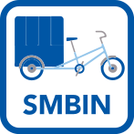
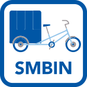

100K Donations
Creating a modern sustainable donation model
The Challenge
New York City is one of the most densely populated and wealthiest regions in the United States. Yet Goodwill’s penetration of the potential donor base is at best very shallow.
Objective
To increase our donor count by 100,000 by making it as convenient as possible to donate. To succeed, we particularly need to attract new supporters, including the next generation of donors.
Goodwill First
Our initiatives are driven by convenience, the Shortest Path to Donation. We want Goodwill to be the first option that comes to mind when people think of donating and furthermore, to be the first available option there when it actually happens.
Strategy
- Introduce the concepts of diversity and redundancy to our current and future donation models
- Create new donation models using innovative technologies
- Use Data-Science to evaluate the effectiveness of all donation streams

Smart Mobile Donation Acquisition
 



What is Smart Mobile Donation Acquisition?
If donors won’t come to our stores, what if we went to them?
Pick Up Pop Up
Smart Mobile Attended Donation Center
The UBER of donations
Smart Mobile Attended Donation Center
Where’s Goodwill?
GPS & Route Optimization
Let's grow smart!
Data Science / Data Analytics
It is about identifying our success cases, detect patterns of why they worked, being able to export, adapt and replicate the model in a continuum of data gathering and learning.
Let's go mobile!
SMS + Social Media
Website
Mobile App
Find SMADCs - Home pickup - Locate stores and partners
Donation Partner Network

What is the Donation Partner Network?
Seasonal Awareness
Partners
Donation-Based Branding and Marketing

Leveraging Every opportunity
Every interface moment is an opportunity to build a donor and a shopper.
Mission impact
Donate Stuff Create Jobs | Your donations change lives
Environmental impact
Millions in marketing opportunities
City Harvest valued the PR/marketing exposure of their partnership with Revolution Rickshaws at $2 million.
Benefits
- Gauge potential new retail locations
- Mobility of our SMADC and SMBIN
- Convenience of the Green Mile for Donors (Near to Door)
- Development of new partnership
- Every interface is an opportunity to develop a new donor or shopper